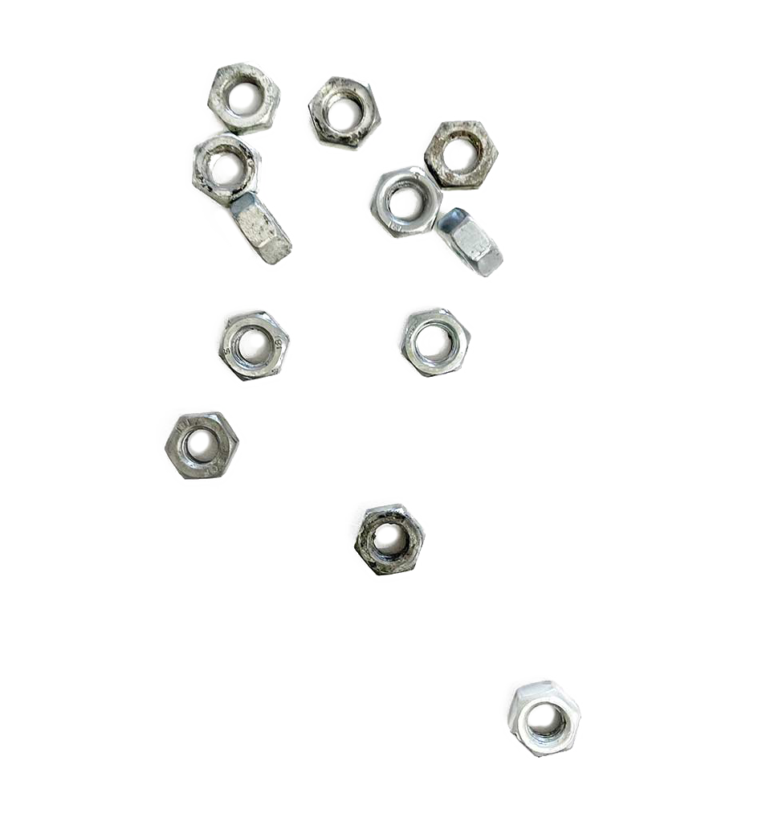
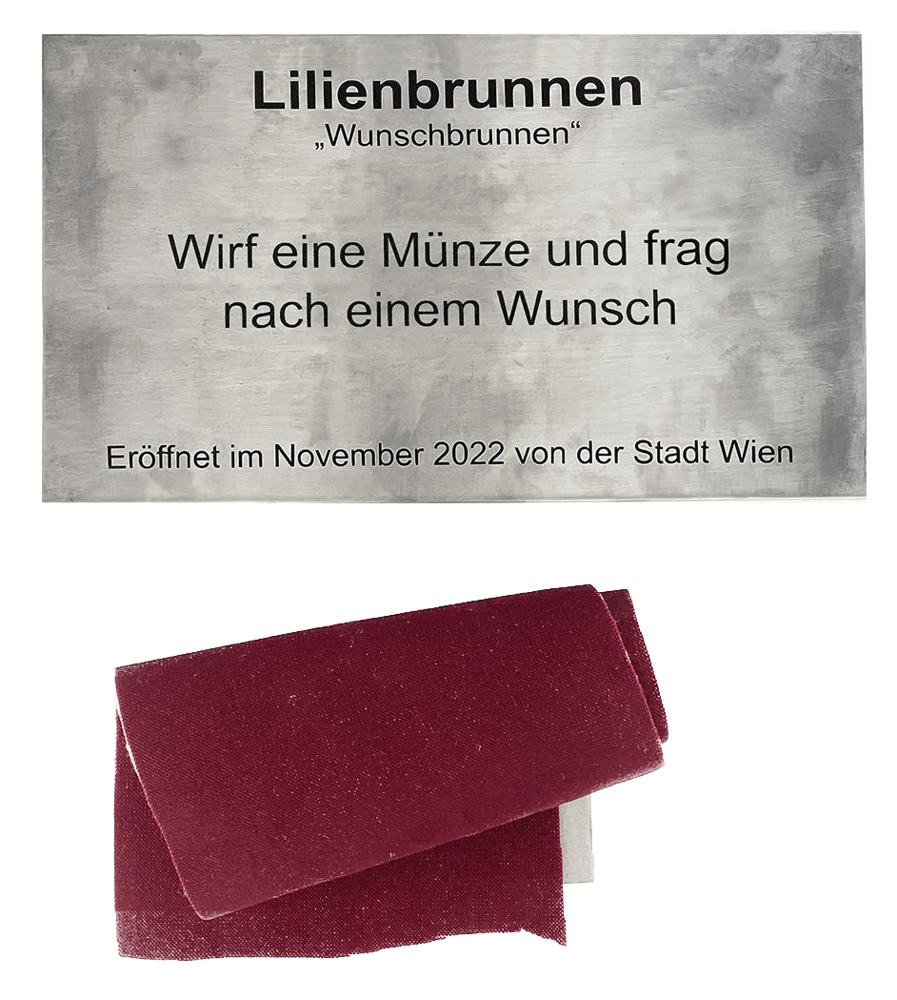

city vs citizens
interventions,
vienna 2023.

As estruturas da cidade desempenham um papel decisivo em "quem" e "para quê é que" o espaço público pode ser utilizado. Certas acções são permitidas e outras evitadas. Estes limites foram o ponto de partida para este projecto em parceria com a Gala Kuckhoff.
Tomando Viena como exemplo, "City vs Citizens" foi desencadeado pelo nosso privilégio: como é que o acesso ao espaço privado afeta a forma como vivemos o espaço público? Como um exercício, tentámos ser mais intencionais ao andar na cidade e reparar no que nos é dito através do Design.
Como produto desse exercício e da pesquisa sobre o tema Design Hostil, seleccionámos espaços que nos pareciam restritivos ou desconfortáveis. O seu design foi posto em causa de uma forma exagerada ou irónica. O projeto, que pode ser visto com mais detalhe neste documento, cconsiste em cinco intervenções em espaço público, onde utilizámos as mesmas estratégias que criaram os limites: modificar, adicionar ou remover.
1/5 _ Christian-Broda-Platz, 1060 viena
A área de estar formada por estas cadeiras parecia inadequada tanto para estranhos como para amigos. Estar de frente para alguém tão diretamente, mas simultaneamente não poder interagir de perto, estava a inibir-nos, e (tanto quanto pudemos observar) à maioria das pessoas, de usar o espaço.
Depois de retirarmos (e levarmos) os parafusos e brincarmos com a distância das cadeiras, deixámo-las viradas para a direção oposta. Pouco tempo depois, as cadeiras foram usadas e deixadas em diferentes disposições orgânicas, o que sugeria um desejo prévio de controlo sobre a disposição desta área de estar. Durante as semanas seguintes, fomos registando as configurações criadas pelas pessoas que usavam as cadeiras até estas serem novamente aparafusadas pela cidade.

2/5 _ Doktor-Karl-Lueger-Platz, 1010 viena
Ao adicionar apoios de braços extra, a aparência geral do banco foi exagerada. Ao reduzir o tamanho do banco, foram criadas novas possibilidades de movimento.
"Os apoios de braços largos cortam o banco. Ninguém se pode deitar aqui, para já não falar em dormir. Não é possível encostarmo-nos uns aos outros, o saco tem de ir para o colo. Então para que serve este banco? Os encostos podem ser uma ajuda para as pessoas mais velhas se levantarem. Mas um banco que joga grupos de pessoas umas contra as outras contradiz o objetivo da meublage pública". (Pühringer, 2023)


3/5_ Lilienbrunngasse, 1020 viena
Acrescentando uma pequena placa com os dizeres "Lilienbrunnen. Atire a moeda e peça um desejo", a estrutura de betão foi "transformada" num poço dos desejos.
"Este "poço dos desejos" foi o tema principal entre os utilizadores vienenses do Twitter no fim de semana passado. Justificadamente, surgem muitas perguntas: Porque é que tem este aspeto? Quanto é que custou aos contribuintes? Mas será mesmo um "poço dos desejos"? No início, a cidade de Viena também não sabia. "Hum, vamos perguntar sobre isso", escreveram - mas: "O facto de ter um sinal não significa automaticamente que seja a cidade de Viena". O diretor de comunicação da MA 31 (Água de Viena) escreve que se trata do sistema de ventilação pressurizada do edifício municipal ao lado. E o sinal da fonte não foi certamente colocado pela cidade de Viena. "Caso contrário, haveria uma cerimónia de abertura festiva com os líderes distritais", brinca um utilizador." (MeinBezirk, 2022)
4/5 _ Meiselmarkt, 1150 viena
Com esta intervenção, tentámos não só exagerar as características existentes, mas também criar uma representação visual de uma ideia que tínhamos: pegar numa vedação e usá-la como escada.
Estes dois objectos podem ser tão semelhantes visualmente, mas servem propósitos completamente opostos. E como o nosso projeto se baseava em limites, pensámos que seria interessante tentar usar um limite para ultrapassar um limite.
Esta estrutura no meio de uma rua pedonal pareceu-nos ideal para explorar esta metáfora. Tentámos aumentar o absurdo da construção, criando uma terceira vedação.


5/5 _ Praterstern, 1020 viena
Desde a reabertura do Praterstern, os bancos "pedra" suscitaram um debate aceso sobre a sua utilidade. Alguns vêem-nas como hostis aos sem-abrigo, outros como mera decoração (cara) e, para brincar com isso, "embalámo-las".
Acrescentámos uma enorme rede com uma etiqueta de preço que realça o valor das pedras e, assim, questiona a transparência do custo dos novos bancos.